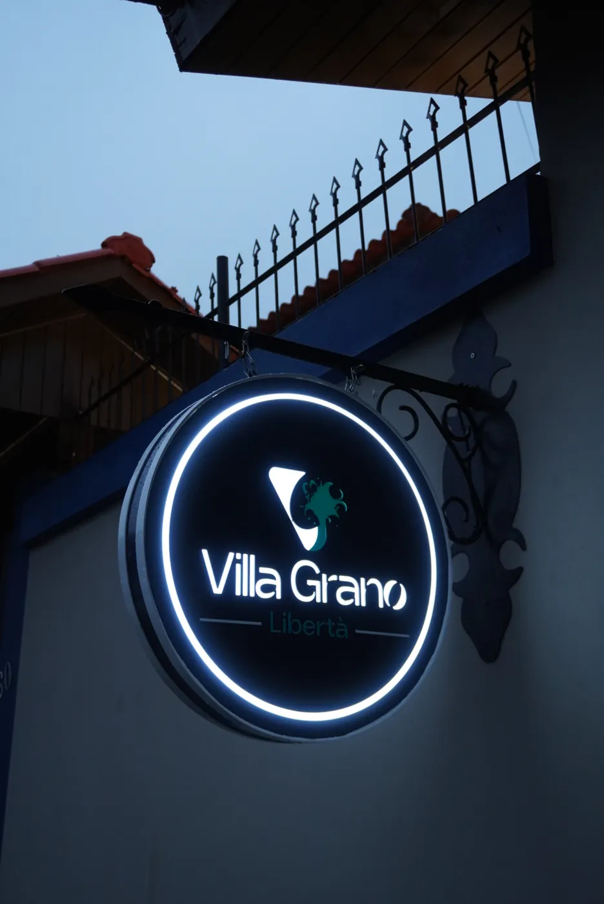

Centro Terapêutico
Villa Grano Libertà
“Acreditamos que cuidar vai além do diagnóstico.”
Um acompanhamento construído através da escuta, do acolhimento e de uma abordagem individualizada para cada história, em uma casa cercada de jardins no interior gaúcho.